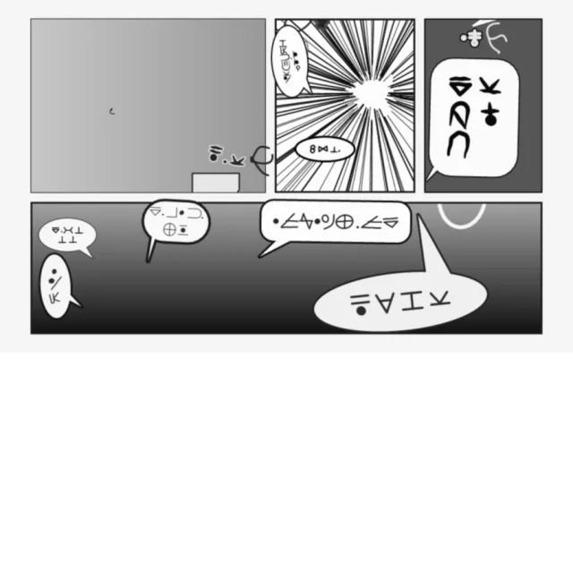
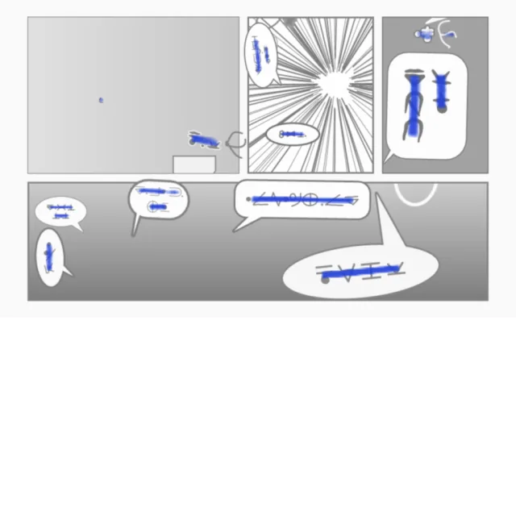

解説 · はじめてのコンピュータービジョン
小さなAIが『HUNTER×HUNTER』のハンター文字を読めるようになるまで
見たこともない暗号の文字を、コンピューターにどうやって読ませるのでしょう？ コンピューターに写真がどう見えているのかから、まちがいからどう学ぶのかまで、その道のりを一歩ずつ、図を使って紹介します。数学やプログラミングの知識はいりません。
更新（2026年11月25日） 読み取りページで、新しいモデルを 2 組使えるようになりました。「高速」はこの記事の小さな読み取りAIを、写真に近い画像でさらに学習させたもので、数字と一部の記号も読めます。「高精度」はもっと大きなモデルで、本物の写真をずっとよく読めます。以下で説明する仕組みは変わりません。
更新（2026年11月26日） 読み取りページが、文字デザインの一部として描かれた数字（型番の「07」や、タイトルの後の「!!」など）と、アニメの話タイトルで言葉の間に入る「×」も読めるようになりました。詳しくは技術レポートにあります。
スマホは、あなたの顔を見てロックを解除したり、犬の写真を全部見つけ出したり、カメラ越しに看板の文字を読んだりできます。これはすべてコンピュータービジョン、つまりコンピューターに画像を理解させる技術です。このページでは、小さなコンピュータービジョンのプロジェクトがどう動くのかを、最初から最後まで紹介します。アニメ『HUNTER×HUNTER』に出てくる架空の文字を読むリーダーで、スマホに収まるほど小さなものです。私たちの知る限り、この文字を画像から読めるプログラムは、世界でこれが初めてです。
全体の流れ
細かい話に入る前に、写真がたどる道のりを全部見ておきましょう。それぞれの停留所が、このあと出てくる小さなアイデアです。停留所をタップすると、その説明に飛べます。
正体は日本語の暗号
『HUNTER×HUNTER』の看板やサブタイトルに出てくる文字は、まったく新しいアルファベットのように見えますが、実は暗号です。ハンター文字の記号は、ひとつひとつが あ・か・ん のような日本語のかなに対応しています。記号は全部で47個。右下に小さな点を付けると濁音になり、か が が に変わります。小さな丸を付ければ、は が ぱ になります。
コンピューターには何が見えている？
写真を見ると、私たちには形や色や意味が見えます。でもコンピューターに見えているのは数字です。画像はすべてピクセル（画素）と呼ばれる小さなマス目の集まりで、ピクセル1つ1つが1つの数字になっています。白黒の画像なら、0 が黒、255 が白で、その間の数字は濃さのちがう灰色です。
この図の帯は高さ48ピクセル、幅768ピクセル。つまり 36,864 個の数字です。コンピューターの仕事は、この数字を正しい文字に変えること、ただそれだけです。でも、そのためのルールを人が手で書くことはできません（「1,203 番のピクセルが暗くて、1,204 番が明るかったら…」）。そこで、コンピューターにお手本からルールを学ばせるのです。
小さな型紙で輪郭を見つける
コンピュータービジョンの最初の技はフィルターです。3×3 に数字が並んだ小さな型紙のようなもので、コンピューターはこれを画像の上で少しずつずらしていきます。それぞれの場所で、型紙の下にある9個のピクセルに、型紙の9個の数字をそれぞれ掛けて、全部足し合わせます。画像の模様が型紙と合っていれば答えは大きくなり、合っていなければ 0 に近くなります。ある型紙は縦にのびる輪郭を、別の型紙は横にのびる輪郭を見つけ、また別の型紙は画像をぼかします。
層: 輪郭から記号へ
フィルター1つで見つけられるのは、輪郭のような単純なものだけです。ニューラルネットワークは、フィルターの層をたくさん積み重ねたものです。最初の層は輪郭を見つけ、次の層は輪郭を組み合わせて線やカーブにし、その後ろの層は記号の部品を見つけ、最後の層がどの記号なのかを決めます。この読み取りAIには数十の層があり、フィルターの中にはおよそ 320,000 個の数字が入っています。その数字を人が手で決めたわけではありません。コンピューターが練習して見つけたのです。
さわって試せるニューラルネットワーク
これは本物のニューラルネットワークです。全体が見えるほど小さく、知っている記号は6つだけ。左側が入力で、16 × 16 のマス目のピクセル、つまり 256 個の数字です。丸の1つ1つがニューロンという小さな計算機です。ニューロンは、入ってきた数字それぞれに自分の重みを掛けて全部足し合わせ、合計が 0 より大きければ次へ渡します。線が重みを表しています。太い線は大きな重みで、青い線は次のニューロンの値を押し上げ、紫の線は押し下げます。右側の6つのニューロンがそれぞれの記号に点数を付け、いちばん点数の高い記号が答えになります。
最初の列のニューロンが何を探しているかを見てみましょう。重みがマス目の上に模様を作っています。青はインクがほしい場所、紫はインクがほしくない場所です。この模様は誰かが描いたものではありません。記号を見分けるのに役立つので、ネットワークが練習のあいだに自分で見つけたのです。
「読む」は2つの仕事
マンガのページを読むとき、私たちは気づかないうちに2つのことをしています。まず文字の部分を見つける（この吹き出し、あの看板）。次に、それぞれを読む。このアプリも同じで、仕事ごとに小さなニューラルネットワークを1つずつ使います。

お手本はどこから来るの？
ニューラルネットワークはお手本から学びます。たくさんの画像と、それぞれに付けた正しい答えです。このお手本の集まりをデータセットと呼びます。読み方を覚えるには、読み取りAIには何十万ものお手本が必要です。でも、ハンター文字の画像をそんなにたくさん集めて答えを付けた人はいません。本物の画像は数十枚ほどしかないのです。そこで、ここで使う学習用の画像はすべて作り物です。プログラムが記号を描いてから、わざと汚したり崩したりして、現実のごちゃごちゃした画像にも対応できるようにしています。プログラム自身が描いたので、正しい答えはいつも分かっています。
これをランダムな設定で50万回くり返せば、学習用の教科書のできあがりです。このプログラムはこれまでに4回作り直しました。ネットワークが現実の何か（たとえば ま の別の書き方や、文字のすぐ横に立つキャラクターの絵）でつまずくたびに、プログラムもそれを描けるようにしてきたのです。

ページの中から行を見つける練習用には、2つ目のプログラムがマンガのページを丸ごと作ります。コマ、吹き出し、看板。さらに英語や日本語、アイコンなど、ハンター文字ではないものもたくさん描き込んで、行さがしAIがそれらを無視できるようにしています。

学び方: 予想して、確かめて、直す
最初、ネットワークの中の数字はでたらめなので、予想もめちゃくちゃです。そこから、何回も何回も練習します。
- お手本をひとまとまり見せる（ここでは一度に作り物の行を 128 本）。
- それぞれに何と書いてあるかを予想させる。
- 予想を正しい答えと比べて確かめ、どれくらいまちがえたかを測る。
- 予想のまちがいが少なくなる方向へ、中の数字を1つ残らず、ほんの少しずつ直す。
1回の調整はほんのわずかですが、何千回もくり返すと、ネットワークはとても上手になります。バスケットボールのフリースローの練習に少し似ています。外れるたびに、ねらいをどう変えればいいかが分かるのです。
大事なルールが1つあります。テスト用の行は、練習用の行とは別にしておくことです。そうしないと、ネットワークは答えを丸暗記できてしまいます。テストの問題を前もって見ていた生徒のようなもので、本当の実力よりかしこいと勘ちがいしてしまうのです。
1行の読み方
読み取りAIは、指で文字をなぞるようにして帯を読みます。4ピクセルごとに1歩、全部で192歩進みながら、一歩ごとに「どの記号が見えるか」、または「ここには何もない」と答えます。
まず帯は、ネットワークの層を通ります。上の6記号のネットワークと同じしくみですが、ニューロンの数はずっと多くなります。各層は入力を、特徴マップと呼ばれる新しい画像の束に変えます。特徴マップはそれぞれ、自分の担当の模様を見つけた場所で光ります。層を進むごとに画像は低くなり（高さ48ピクセル、次に24、12、6、3、2）、そのかわり枚数は増えていきます（最大64枚）。最後には、帯の上の1歩1歩が 64 個の数字のリストで表され、最後の層がそのリストを、75 通りの答えそれぞれの点数に変えます。
ほとんどの歩は「何もない」と答えます。記号と記号のすき間に当たるからです。そこで読み取りAIは、2段階で整理します。まず、同じ記号を見た歩が続いていたら、くっつけて1つに数えます。次に、「何もない」の歩を捨てます。残ったものが答えの文字です。
そもそも、なぜ「何もない」という答えが必要なのでしょう？ それは、同じ記号が2つ続く言葉があるからです。たとえば「ここ」。間に「何もない」の歩がなければ、2つの こ はくっつけられて、1つの こ になってしまいます。
予想に注目してください。読み取りAIが ぐ を見ているとき、2番目の候補は く です。点がないだけの同じ形ですね。ど のときの次点は と です。ネットワークはただ答えを1つ選ぶのではなく、ありうるすべての答えに信頼度（どれくらい自信があるか）を付けます。アプリはこの信頼度を使って、どの読みを信用するかを決めています。
行の見つけ方
行さがしAIは、いきなり枠を描くわけではありません。まず、文字の行の真ん中だけを塗ります。行の中心だけをなぞる蛍光ペンのようなものです。そのあと簡単な図形の計算で、塗った筋を外側へ広げて枠に戻します。真ん中だけを塗るのは、すぐ近くに並んだ行どうしがくっついて1つの塊になるのを防ぐためです。もう1種類の塗り分けで、それぞれの行が横書きか縦書きかも示します。


小さく、速く、プライバシーも安心
たいていのAIモデルは、スマホのWebブラウザで動かすには大きすぎます。この3つのモデルはとても小さく、3つ合わせて約1 MB。スマホのカメラで撮った写真1枚よりも小さいのです。それを可能にしているのが2つの工夫です。
1つ目は、ネットワークがもともと小さいこと。スマホ向けに作られた MobileNet という設計をもとにしています。2つ目は、中の数字を1つ1つ4バイトではなく1バイトで記録していること。値段の細かい端数を丸めて、きりのいい金額にしておくようなものです。丁寧に丸めれば、精度はほとんど落ちません。
これはすべてあなたの端末の中で動きます。モデルはページと一緒に一度だけダウンロードされ、あなたの画像がスマホの外に出ることはありません。モデルを動かすプログラムは Rust というプログラミング言語で書かれ、WebAssembly という形式に変換されています。WebAssembly は、最近のブラウザならどれでも動かせる形式です。
縦書きは横に倒して読む
日本語は縦書きも多く、マンガの吹き出しはたいてい縦書きです。アプリはこうした縦の列を横に倒して、ふつうの左から右への帯にします。そして、倒した列だけで訓練した2つ目の読み取りAIが、それを読みます。
ライブカメラ
スマホのカメラをハンター文字に向けると、リーダーは1秒間に数回、画像を読み取ります。1回だけだと記号を1つ読みまちがえることがあり、表示がちらついてしまいます。そこで各行は直近5回の読み取り結果を覚えておき、いちばん多かったものを表示します。
まだできないこと
- 練習したのは作り物の画像だけです。本物のスキャン画像や写真はもっと難しいかもしれませんが、テストに使える本物の例は、まだたくさんはありません。
- とても小さな文字は見落とします。リーダーでその部分をタップすると、行さがしAIがもっと近くから見直します。
- ほかの文字がまぎれこむこともあります。最初のバージョンは、英語や日本語、アイコンまで枠で囲んでいました。そこで行さがしAIを、そうした文字だらけのページで学び直させたところ、それらを無視できるようになりました。ハンター文字がほとんどないテスト用のページでは、ふつうの文字をまちがって囲む枠が、1ページあたり25個から1個未満に減りました。さらにアプリは、自信のない行を隠すようにしています。
- 句読点には対応していません。また、小さいかな（ゃ、っ）は、ふつうの大きさのかなとして出てきます。
覚えておきたい言葉
- コンピュータービジョン
- コンピューターに画像や動画を理解させる技術。
- ピクセル（画素）
- 画像を作っている小さなマス1つ。数字1つ（カラーなら数字3つ）で記録される。
- フィルター
- 画像の上をすべらせて、輪郭などの模様を見つける、数字の小さな型紙。
- ニューラルネットワーク
- フィルターの層をたくさん積み重ねたもの。中の数字は人が手で書くのではなく、学習で決まる。
- データセット
- ネットワークが学ぶためのお手本の集まり。どのお手本にも正しい答えが付いている。
- 学習（トレーニング）
- 予想して、確かめて、直す。このくり返しでネットワークの数字を調整すること。
- テストセット
- ネットワークを公平に確かめるために取っておくお手本。練習には一度も使わない。
- 信頼度
- ありうる答えのそれぞれについて、ネットワークがどれくらい自信があるか。0% から 100% で表す。
- モデル
- 学習を終えて、すぐに使えるネットワーク。このアプリには3つあり、合わせて約1 MB。
次はあなたの番
このページの内容は、すべて家庭のパソコン1台と、無料のツールと、たくさんの好奇心で作られました。あなたも今日から、コンピュータービジョンを探検できます。
- リーダーを試してみよう。まずはサンプルページで、次に自分のスクリーンショットで。どこでまちがえるかを見つけて、その理由を考えてみてください。
- 自分だけの暗号の文字を、紙の上で作ってみよう。そして考えてみてください。その文字の練習用の画像を何千枚も作るには、どうすればいいでしょう？
- ブラウザで自分の画像モデルを学習させてみよう。Google の Teachable Machine のような無料ツールを使えば、Webカメラを使って数分で、ものを見分けるモデルを作れます。プログラムを書く必要もありません。
- プログラミングを少し学んでみよう。AIでいちばんよく使われている言語は Python で、初心者向けの無料の講座がたくさんあります。このページに出てきた考え方（ピクセル、フィルター、学習）は、どのコンピュータービジョンの講座でも最初に習う内容です。
試してみよう
リーダーを開いて、写真やスクリーンショットを選ぶか、サンプルページを試すか、カメラをハンター文字に向けてみてください。